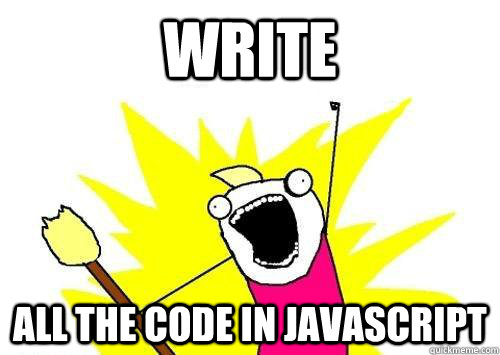
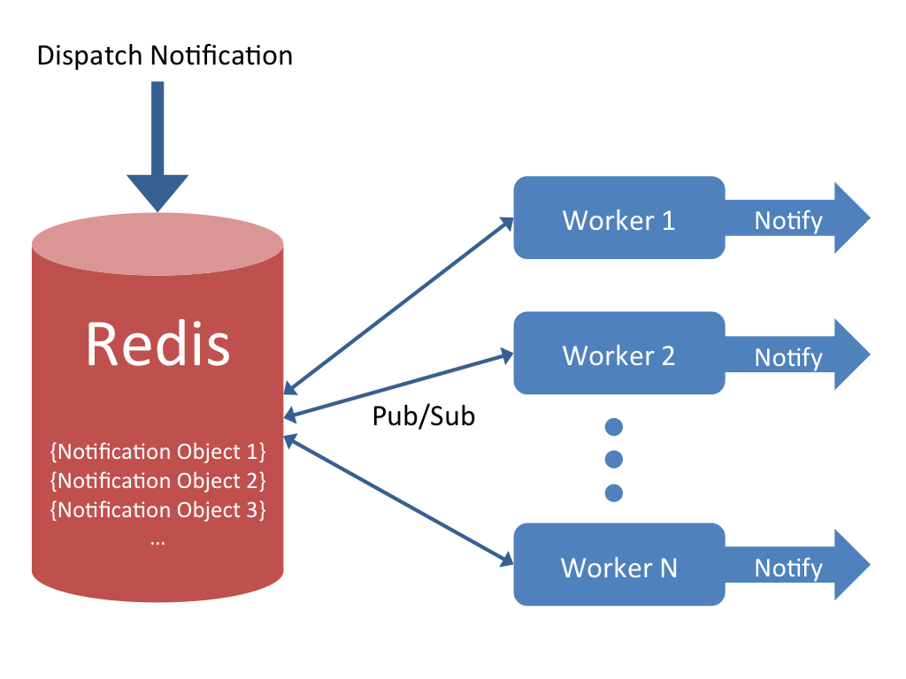
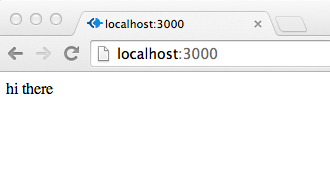
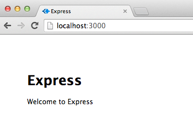
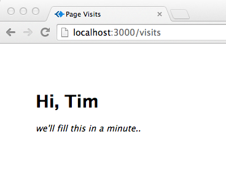
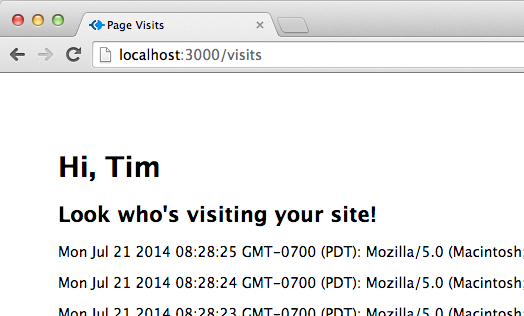
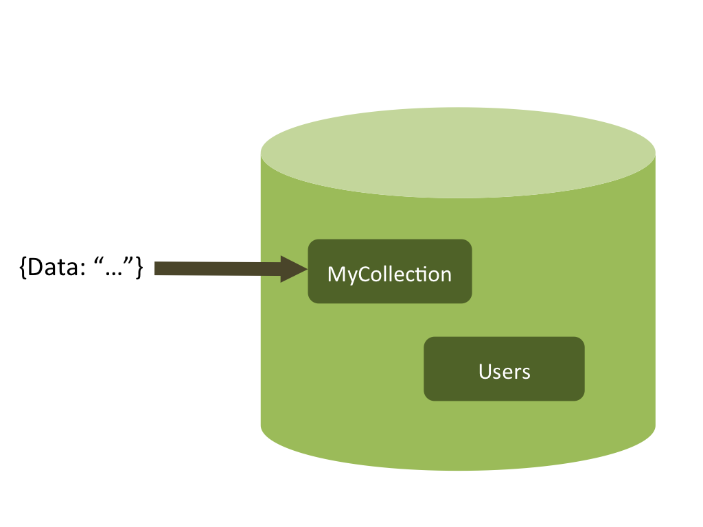

Before we get started, Install These:
OSX
(if you have homebrew)
$ brew install node
$ brew install redis
$ brew install mongo
Ubuntu/Debian
(use sudo if necessary)
$ apt-get install nodejs
$ apt-get install redis-server
$ apt-get install mongodb
$ apt-get install npm
Windows
(using chocolatey)
> cinst nodejs.install
> cinst redis
> cinst mongodb
or for manual install instructions, go to:
http://nodejs.org | http://mongodb.org | http://redis.ioAnd clone the workshop repo:
$ git clone https://github.com/cacois/nodejs-three-ways
Node.js Three Ways
A Tutorial in Three Acts
Constantine Aaron Cois and Tim Palko
Carnegie Mellon University, Software Engineering Institute
Disclaimer: Though we are employees of the Software Engineering Institute at Carnegie Mellon University, this wok was not funded by the SEI and does not reflect the work or opinions of the SEI or its customers.
Aaron =
{
twitter: @aaroncois,
blog: www.codehenge.net,
github: http://github.com/cacois
}
Tim =
{
twitter: @timpalko,
github: http://github.com/tpalko
}
Code
Code for this workshop can be found on github:https://github.com/cacois/nodejs-three-ways
Slides
You can also find slides here:http://cacois.github.io/nodejs-three-ways/#/
The Basics
Node.js!
What's the big deal?
Cool things that Node is
- JavaScript
- Server-side
- Event-driven
- Fast and Efficient
JavaScript
This means you can...

Advantages to JS
- Familiar
- Low barrier to entry
- Team Redundancy
(Front-end devs and back-end devs speak the same language)
Let's talk speed
Node.js was designed for highly-concurrent network applications
(Read: scalable web apps, among other things)
Fast
Node uses the V8 JavaScript engine powering Google Chrome
This means lightning fast JavaScript execution
Efficient
Node.js is asynchronous and event-driven
This means you have to think a bit differently
Callbacks
fs = require('fs');
fs.readFile('f1.txt','utf8',function(err,data){
if (err) {
// handle error
}
console.log(data);
});
Callbacks
Equivalent Syntax
fs = require('fs');
fs.readFile('f1.txt','utf8',
function(err,data) {
if (err) {
// handle error
}
console.log(data);
}
);
Let's get to work
Act 1 - Node.js Network Services
Act 1
Node.js Network Services
We're going to build a scalable, real-time notification service
Here's what it will look like
Part 1
Create a project directory and file
$ mkdir node-act1
$ cd node-act1
$ touch worker.js
A first test
Put the following in worker.js:
console.log("Hello OSCON!");
$ node worker.js
Node Package Manager (NPM)
We will need to use some external packages for our app.
Specifically, we will need the Redis client package. Install it using:
$ npm install redis
$ ls node_modules
Add the following to worker.js:
// import the redis module
var redis = require("redis");
// create a redis client object
var pubSubClient = redis.createClient('6379', 'localhost');
// subscribe to 'notifications' collection
pubSubClient.subscribe("notifications");
// define message handler
pubSubClient.on("message", function(channel, message) {
console.log('Received a message: ' + message);
});
$ redis-server
$ node worker.js
$ redis-cli
redis-cli> publish notifications '{"identifier": 1, "message": "Huzzah!"}'
(integer) 1
The value after (integer) tell you how many subscribers received the published message
$ node worker.js
Received a message: Huzzah!

Part 2
If your code has errors, start with the files from directory
/act-1-network-services/begin-part-2/
Config File
I like to use a module for config data. Create a file named config.js:
$ touch config.js
module.exports = {
host: 'localhost',
port: 6379
}
var config = require("./config.js");
var pubSubClient = redis.createClient('6379', 'localhost');
var pubSubClient = redis.createClient(config.port, config.host);
Nifty!
Package Management
We've already seen how to install individual packages using NPMBut can we automate this, and centrally manage package requirements?
Yes, with a package.json file:
$ touch package.json
Package.json
A lot of info can go into a package.json fileWe'll only use a small bit of its functionality here. Write this:
{
"name": "act-1-network-services",
"author": "MY NAME <my@email.com>",
"version": "1.0.0",
"dependencies": {
"redis": "*",
"nodemailer": "*"
},
"engine": { "node" : ">=0.10.0" }
}
This specifies:
- some metadata about the app
- a list of package dependencies (we'll need nodemailer later)
- a required Node version
NPM Install
Now that we have a package.json, we can install the app and its dependencies in one command:
$ npm install
NPM will look for a local package.json and use it to set everything up
Part 3
If your code has errors, start with the files from directory
/act-1-network-services/begin-part-3/
worker.js should look like this:
// import the redis module
var redis = require("redis");
// read in the config file as a JavaScript object
var config = require("./config.js");
// create a redis client object
var pubSubClient = redis.createClient(config.port, config.host);
// subscribe to 'notifications' collection
pubSubClient.subscribe("notifications");
// define message handler
pubSubClient.on("message", function(channel, message) {
console.log('Received a message: ' + message);
});
// import the redis module
var redis = require("redis");
// read in the config file as a JavaScript object
var config = require("./config.js");
// create a redis client object
var pubSubClient = redis.createClient(config.port, config.host);
// subscribe to 'notifications' collection
pubSubClient.subscribe("notifications");
// define message handler
pubSubClient.on("message", function(channel, message) {
console.log('Received a message: ' + message);
});
Move the closure out to a separtely defined function:
// define message handler
pubSubClient.on("message", handleMessage);
function handleMessage(channel, message) {
console.log('Received a message: ' + message);
}
We want multiple, fault-tolerant workers to handle notifications. This will make our system scalable.
We can accomplish this by making all workers race to handle any notification dispatched - which means locks
worker.js
...
// define message handler
pubSubClient.on("message", handleMessage);
function handleMessage(channel, message) {
console.log('Received a message: ' + message);
var payload = JSON.parse(message);
acquireLock(payload, lockCallback);
}
acquireLock
We can use Redis for locks, too. The first worker to write a lock for a given notification wins!worker.js
...
var client = redis.createClient(config.port, config.host);
...
function acquireLock(payload, callback) {
// create a lock id string
var lockIdentifier = "lock." + payload.identifier;
console.log("Trying to obtain lock: %s", lockIdentifier);
client.setnx(lockIdentifier, "Worker Name", function(error, success) {
if (error) {
logger.error("Error acquiring lock for: %s", lockIdentifier);
return callback(error, dataForCallback(false));
}
var data = {
"acquired" : success,
"lockIdentifier" : lockIdentifier,
"payload" : payload };
return callback(data);
});
}
You Are Special
Give your worker a better name than "Worker Name"! Unique and memorable.That way, if your worker acquires a lock on a central server, the lock can identify your worker.
(Protip: If you want to pass a worker name/id in from the command line, check out the process.argv object)
lockCallback
Now the callback after a worker tried to acquire a lock.worker.js
...
function lockCallback(data) {
if(data.acquired == true) {
console.log("I got the lock!");
// send notification!
// TODO: actually notify
console.log('I win! Sending notification: %s',
JSON.stringify(data));
}
else console.log("No lock for me :(");
}
$ node worker.js
(in another terminal)
$ redis-cli
redis-cli> publish notifications '{"identifier": 2, "message": "in a bottle"}'
// this next command will show you the keys currently in
// redis. You should see "lock.2"
redis-cli> keys *
// this command will show the value for the key "lock.2". This
// will be the name of the worker who won the lock
redis-cli> get "lock.2"
Part 4
A Live Competition!If your code has errors, start with the files from directory
/act-1-network-services/begin-part-4/
Host: 54.191.82.237
Port: 6379
Everyone connect with a unique worker name
We'll dispatch a notification, and see which worker wins!
Let's scale
Fire up multiple workers (be sure to give them different names), and watch them race!
Final Step
Call a function to send a notification...
function lockCallback(data) {
if(data.acquired == true) {
console.log("I got the lock!");
// send notification!
sendMessage(data);
}
else console.log("No lock for me :(");
}
Final Step ..send some SMTP
function sendMessage(payload) {
console.log("Sending email notification...");
var smtpTransport = mailer.createTransport("SMTP",{
service: "Gmail",
auth: {
user: "<Google username>",
pass: "<your Google application-specific password>" }
});
var mailOptions = {
from: "<email>", // sender address
to: "<email>", // list of receivers
subject: "Notification from Node.js", // Subject line
text: "You are hereby notified!", // plaintext body
html: "<b>You are hereby notified!</b>" // html body
};
smtpTransport.sendMail(mailOptions, function(error, response){
if(error) console.log("Error sending mail: " + error);
else console.log("Message sent: " + response.message);
smtpTransport.close(); // shut down the connection pool
});
}
Act 2
Part 1
Basic Express
Express
A lightweight web framework for Node.js
three files, 17 lines of code
app.js, package.json, README.md
Step 1: Create package.json:
* - Watch for spaces in "name". Express doesn't like them.
{
"name": "Express-Basic-Tutorial",
"description": "I'm learning nodejs express!",
"version": "0.0.1",
"private": true,
"dependencies": {
"express": "4.4.0"
}
}
Hint
To find the latest available version of a module
$ npm info express version
"express": "*"
Step 2: Create README.md
This file needs some content for Express to be happy.
# Meet My App
App, audience. Audience, app.
Step 3: Profit Create app.js
var express = require('express');
var app = express();
app.get('/', function(req,res){
res.send("hi there");
});
var server = app.listen(3000, function(){
console.log("Listening on 3000");
});
Step 4: Install your dependencies
$ npm install
Step 5: Run it
$ node app.js
Listening on 3000
and visit
http://localhost:3000
That was easy..
Act 2
Part 2
Advanced Express
(ooooooooh...)Surely, Express can do more
Yes, it can. And with a little help.
(and don't call me Shirley)Express Generator
// install express generator
$ npm install -g express-generator
// create a new web application using ejs as the templating engine
$ express -e ejs myapp
$ cd webapp
$ npm install
$ npm start
> bigwin@0.0.1 start /where/you/cloned/the/repo/nodejs-three-ways/act-2-part-2-advanced-express/begin-part-1/bigwin
> node ./bin/www
and visit http://localhost:3000
visite du code
app.js
var express = require('express');
var path = require('path');
var favicon = require('static-favicon');
var logger = require('morgan');
var cookieParser = require('cookie-parser');
var bodyParser = require('body-parser');
var routes = require('./routes/index');
var users = require('./routes/users');
var app = express();
// view engine setup
app.set('views', path.join(__dirname, 'views'));
app.set('view engine', 'ejs');
app.use(favicon());
app.use(logger('dev'));
app.use(bodyParser.json());
app.use(bodyParser.urlencoded());
app.use(cookieParser());
app.use(express.static(path.join(__dirname, 'public')));
app.use('/', routes);
app.use('/users', users);
/// catch 404 and forward to error handler
app.use(function(req, res, next) {
var err = new Error('Not Found');
err.status = 404;
next(err);
});
/// error handlers
// development error handler
// will print stacktrace
if (app.get('env') === 'development') {
app.use(function(err, req, res, next) {
res.status(err.status || 500);
res.render('error', {
message: err.message,
error: err
});
});
}
// production error handler
// no stacktraces leaked to user
app.use(function(err, req, res, next) {
res.status(err.status || 500);
res.render('error', {
message: err.message,
error: {}
});
});
module.exports = app;
/bin/www
bash script, includes app.js, runs server
This is executed from within package.json..
#!/usr/bin/env node
var debug = require('debug')('newapp');
var app = require('../app');
app.set('port', process.env.PORT || 3000);
var server = app.listen(app.get('port'), function() {
debug('Express server listening on port ' + server.address().port);
});
package.json
same old package.json
{
"name": "newapp",
"version": "0.0.1",
"private": true, // disallows npm from publishing
"scripts": {
"start": "node ./bin/www" // you know this guy
},
"dependencies": {
"express": "~4.2.0",
"static-favicon": "~1.0.0",
"morgan": "~1.0.0",
"cookie-parser": "~1.0.1",
"body-parser": "~1.0.0",
"debug": "~0.7.4",
"ejs": "~0.8.5"
}
}
/views/*.ejs
example: index.ejs
Note the <%= .. %> server tags
<!DOCTYPE html>
<html>
<head>
<title><%= title %></title>
<link rel='stylesheet' href='/stylesheets/style.css' />
</head>
<body>
<h1><%= title %></h1>
<p>Welcome to <%= title %></p>
</body>
</html>
/routes/*.js
These are akin to controllers in MVC
A route handler (callback) is associated with a request path
var express = require('express');
var router = express.Router();
/* GET home page. */
router.get('/', function(req, res) {
res.render('index', { title: 'Express' });
});
module.exports = router;
/public/stylesheets
/public/javascripts
/public/images
Don't we need a database and models?
Yes. We'll do that.
But before we get into data and models, let's get familiar..
Write a new view
at /views/visits.ejs:
<!DOCTYPE html>
<html>
<head>
<title>Page Visits</title>
<link rel='stylesheet' href='/stylesheets/style.css' />
</head>
<body>
<h1>Hi, <%= my_name %></h1>
<em>we'll fill this in a minute..</em>
</body>
</html>Write a route
at /routes/visits.js:
var express = require('express');
var router = express.Router();
router.get('/', function(req, res) {
res.render('visits', { my_name: "Tim" }); // -- find our view
});
module.exports = router;
Hook up requests with the route
in app.js:
...
var routes = require('./routes/index');
var users = require('./routes/users');
var visits = require('./routes/visits'); // -- the route
...
app.use('/', routes);
app.use('/users', users);
app.use('/visits', visits); // -- the request assignment
...
restart your server and check out
http://localhost:3000/visits
Right, back to the database and models
First, add a bit to package.json for the mongo dependency
...
"debug": "~0.7.4",
"ejs": "~0.8.5",
"mongoose": "3.8.12"
}
}
and install
$ npm install
Create a new folder and file, /models/visit.js
var mongoose = require('mongoose')
,Schema = mongoose.Schema
,ObjectId = Schema.ObjectId;
var visitSchema = new Schema({
thread: ObjectId,
date: {type: Date, default: Date.now},
user_agent: {type: String, default: 'none'}
});
module.exports = mongoose.model('Visit', visitSchema);
And use that model to write data to mongo in app.js
...
// -- this can go near the top
var mongoose = require('mongoose');
mongoose.connect('mongodb://localhost/myapp');
...
// -- bunch this with the other requires
var Visit = require("./models/visit.js");
...
// -- we run some code inline with each request - a new request decorator
// -- put this before the route handlers
app.use(function(req, res, next){
new Visit({user_agent: req.headers['user-agent']}).save();
next();
});
app.use('/', routes);
app.use('/users', users);
app.use('/visits', visits); // -- the request assignment
...
careful
Now that our app will try to talk to a database, that database will need to be running
# in a Mac OS X terminal
$ mongod --config /usr/local/etc/mongod.conf
# in Ubuntu
$ mongod --config /etc/mongodb.conf
restart your server and check out
http://localhost:3000/visits
I'm writing to a database, but I can't see my data!
Let's fix that.
Modify the route visits.js to fetch the data
Don't forget to pass visits to your view!
...
var Visit = require("../models/visit.js"); // -- new require
router.get('/', function(req, res) {
var query = Visit.find(); // -- only creating a query object
query.sort({date: -1}); // -- no execution here
// -- we still have a render() call
// -- but it is now in the callback to our database query execution
query.exec(function(err, visits){
// -- also note we are passing the results of our query to ejs
res.render('visits', { my_name: "Tim", visits: visits });
});
});
...
And modify the view visits.ejs to render data
..
<h1>Hi, <% my_name %></h1>
<h2>Look who's visiting your site!</h2>
<% for(var v in visits){ %>
<p><%- visits[v].user_agent %></p>
<% } %>
..
restart your server and check out
http://localhost:3000/visits
(keep refreshing, you'll see it) Socket.IO
The final frontier
(cue music)Firstly, what is Socket.IO?
A Node JS module which provides bi-directional socket communication between client and server
What makes it different from regular web traffic over port 80?
Socket.IO establishes a persistent open socket over which both server and client can freely initiate communicate with each other
What does Socket.IO have to do with Express?
Socket.IO is its own thing, and neither Socket.IO nor Express need each other. But Socket.IO integrates with Express so easily that we just had to show it.
Let's try it
First, set up your dependency
...
"debug": "~0.7.4",
"ejs": "~0.8.5",
"mongoose": "3.8.12",
"socket.io": "1.0.3"
}
}
And install
$ npm install
Socket.IO runs as its own server, alongside our Express app
Put this snippet near the top of app.js, after 'app' is defined.
var server = require('http').createServer(app);
var io = require('socket.io').listen(server);
server.listen(3001);
We define "endpoints", or "namespaces" for the server, much like routes.
Here, '/chat' is the namespace.
Put this snippet somewhere after 'io' is defined in app.js.
var chat = io.of('/chat').on('connection', function(socket){
socket.on('chat', function(data){
data.color = 'green';
socket.emit('chat', data);
data.color = 'red';
socket.broadcast.emit('chat', data);
});
});
This is just an HTML form, which will help us interact with the server from the client
This snippet goes in index.ejs somewhere in the BODY tag..
<div id="chatlog" style="height: 200px;overflow-y:scroll;"></div>
<textarea id="chatwindow" cols="30" rows="10"></textarea>
<input id="send_chat" type="submit" value="Send" />
Also in index.ejs in the HEAD tag we'll put our client-side javascript, which connects to, reacts to, and sends messages to the server
<script src="http://localhost:3001/socket.io/socket.io.js"></script>
<script src="//code.jquery.com/jquery-1.10.2.min.js"></script>
<script type="text/javascript">
var chat_socket = io.connect('http://localhost:3001/chat');
chat_socket.on('chat', function(data){
$("#chatlog")
.append(
$("<p style='color:" + data.color + ";'></p>")
.text(data.isay)
);
});
$(document).on('click', "#send_chat", function(e){
chat_socket.emit('chat', {isay: $("#chatwindow").val()});
$("#chatwindow").val("");
});
</script>
restart your server and check out
http://localhost:3000
Try opening a few browser windows!
Act 3
Meteor
Meteor
A web app framework for real-time, reactive apps
* powered by Node.js
Real-time
Server pushes data to all clients, immediately
Reactive
Changes on any client are immediately pushed to all other clients
Slick, huh?
Meteor is designed for single page apps
So, no routing or multiple views out of the box
(Though you can add these features with packages)
Let's check it out
We're going to make an interactive, real-time map
Install Meteor, and create a new dir
$ npm install meteor -g
$ mkdir node-act3
$ cd node-act3
Meteor has a generator, too!
Generate your app
$ meteor create mapit
$ cd mapit
$ meteor
[[[[[ ~/Dropbox/Code/test/mapit ]]]]]
=> Started proxy.
=> Started MongoDB.
=> Started your app.
=> App running at: http://localhost:3000/
Run "meteor --help" if you want to see behind the curtain
You'll notice that meteor claims it has started MongoDB
...even if you don't have MongoDB installed...
That's because
Meteor is a liar!
Just kidding!
It's really because meteor has installed its own
embedded instance of Mongodb
You can access it anytime using:
$ meteor mongo
Autopublish
By default, Meteor publishes all collections to client automatically.
This is basically a security nightmare, and can also bog down your app if you have lots of data. Let's disable it:
$ meteor remove autopublish
autopublish: removed
Note: this means we will have to specify collections to be published and subscribed to. It's for the best.
Now let's check out the generated code
Meteor uses 3 default files:
- mapit.js -- client/server javascript
- mapit.html -- client template/view
- mapit.css -- stylez
mapit.js
if (Meteor.isClient) {
Template.hello.greeting = function () {
return "Welcome to mapit.";
};
Template.hello.events({
'click input': function () {
// template data, if any, is available in 'this'
if (typeof console !== 'undefined')
console.log("You pressed the button");
}
});
}
if (Meteor.isServer) {
Meteor.startup(function () {
// code to run on server at startup
});
}
You'll see two sections in the mapit.js file:
if (Meteor.isClient) {
...
}
if (Meteor.isServer) {
...
}
Any code outside these sections is shared between client and server
That's the beauty of an all-JavaScript app
mapit.html
<head>
mapit
</head>
<body>
{{> hello}}
</body>
Hello World!
{{greeting}}
Templates
Meteor uses a slightly modified version of Handlebars templates (called Spacebars)
..
<body>
{{> mytemplate}}
</body>
..
{{someValue}}
I don't see any callbacks, and that makes me
uncomfortable
Fibers
Meteor uses a node.js library called fibers,
which allows sequential execution of async functions, without callbacks
We don't have time to go into how fibers works, but it's pretty cool
If you want to learn more:
http://howtonode.org/generators-vs-fibers http://meteorhacks.com/fibers-eventloop-and-meteor.htmlThis means meteor apps are straightforward to program
At the cost of some "framework magic"
Let's replace that generated code with something better
Collections
Meteor stores data as JSON objects in MongoDB collections
Now let's create a reactive collection
mapit.js
Markers = new Meteor.Collection('markers');
if (Meteor.isClient) {
Meteor.subscribe("markers");
Template.markerlist.markers = function() {
return Markers.find({});
};
}
if (Meteor.isServer) {
// Insert a marker if none exist
if(Markers.find().count() == 0) {
console.log("No markers found in collection - inserting one");
Markers.insert({"coords": [49.25044, -123.137]});
}
// publish collection to client
Meteor.publish("markers", function () {
// you can specify constraints in find() query, if desired
return Markers.find();
});
}
Now visualize the collection
mapit.html
<head>
mapit
</head>
<body>
{{> markerlist}}
</body>
{{#each markers}}
Marker
-- Coordinates: {{coords}}
{{/each}}
Forget about HTTP POSTS or AJAX
With Meteor you don't need them. Meteor handles all data synchronization between client and server
Collections are accessed as reactive streams of data
Let's try it with our marker collection
Open up two browser tabs/windows, and go to your app
The Test
Since the Marker collection is shared between client and server, we can access it from client-side debug tools.
Pull up your debug console on one tab, and add another marker:
> Markers.insert({"coords": [48, -123]});
You'll see this marker appear in the list of both clients
Part 2
If your code has errors, start with the files from directory
/act-3-meteor-realtime-webapps/begin-part-2/
Map!
Now add the interactive map
We're going to use Leaflet.js. Since Meteor is a highly customized framework, adding a standard JavaScript library may be a bit tricky...
Luckily, there's Meteorite
Meteorite is a package manager for Meteor, similar to NPM
Go ahead and install the meteorite client:
$ npm install -g meteorite
You can search Meteorite packages at [PUT LINK HERE]
Install Leaflet.js
Since there is already a Meteorite package for Leaflet, this becomes very easy:
$ mrt add leaflet
Make a template for the map control, and add it to the view
Add the following to the client section of mapit.js:
Template.map.rendered = function() {
L.Icon.Default.imagePath = 'packages/leaflet/images';
// initialize Leaflet map object
window.map = L.map('map', {
doubleClickZoom: false,
zoomControl:false
}).setView([45.52854352208366,-122.66302943229674], 13);
L.tileLayer.provider('Thunderforest.Outdoors').addTo(map);
var markers = Markers.find(); // db cursor Markers
// Watch the Markers collection for 'add' action
markers.observe({
// When a new marker is added collection, add it to the map
added: function(marker) {
L.marker(marker.coords).addTo(map);
}
});
}
Update mapit.html:
<head>
mapit
</head>
<body>
{{> map}}
{{> markerlist}}
</body>
<template name="map">
Mapit!
</template>
...
And a little CSS
mapit.css
#map {
height: 700px;
margin: 0 auto;
}
Now any time a marker is added, it will appear on the map
Next, add a double-click handler to the map template, so we can add markers through the UI.
Edit the Template.map.rendered function in mapit.js to add this feature:
..
// assign click event to add markers
window.map.on('dblclick', function(event, object) {
// We're storing the marker coordinates in an extensibel JSON
// data structure, to leave room to add more info later
console.log("inserting marker: " + event.latlng);
Markers.insert({"coords": [event.latlng.lat,event.latlng.lng]});
});
..
Try it out!
Double-clicks should add markers reactively, meaning all clients will see them immediately
Part 3
If your code has errors, start with the files from directory
/act-3-meteor-realtime-webapps/begin-part-3/
Users
Let's add one last feature - Users
Meteor Packages
You've seen Meteorite packages, but Meteor has its own subset of packages included, including packages for built-in user auth
Add user auth funcitonality this way:
$ meteor add accounts-password
$ meteor add accounts-ui
Now for a lot of work to enable user auth:
Update mapit.html:
<body>
{{> loginButtons}}
{{> map}}
{{> markerlist}}
</body>
...
You can get the current user with Meteor.user(), or their userid by Meteor.userId()
Now we can record the user who created a marker
Make the following changes:
mapit.js -- window.map.on('dblclick'...)
window.map.on('dblclick', function(event, object) {
// We're storing the marker coordinates in an extensibel JSON
// data structure, to leave room to add more info later
console.log("inserting marker: " + event.latlng);
// ADDED
// check for user, override if no one is logged in
var username;
if(Meteor.user()) username = Meteor.user().emails[0].address;
else username = "anonymous";
Markers.insert({"coords": [event.latlng.lat,event.latlng.lng],
"user": username }); // CHANGED
});
mapit.js -- markers.observe()
markers.observe({
// When a new marker is added collection, add it to the map
added: function(marker) {
// CHANGE
L.marker(marker.coords).addTo(map).bindPopup(marker.user);
}
});
mapit.html -- markerlist template
{{#each markers}}
Marker
-- Coordinates: {{coords}}
-- User: {{user}}
{{/each}}
And so, we leave you to boldly go, and
Thank you!
All code and slides from this workshop can be found at:
https://github.com/cacois/nodejs-three-ways